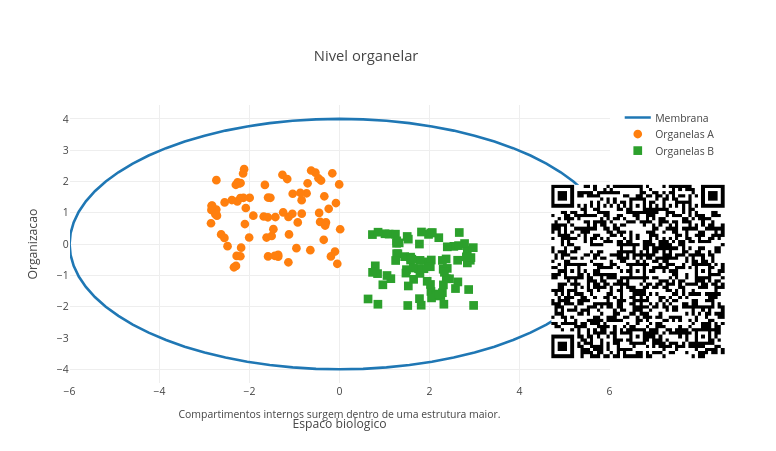
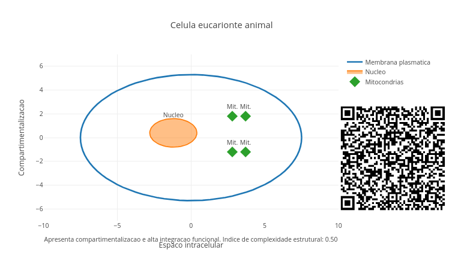
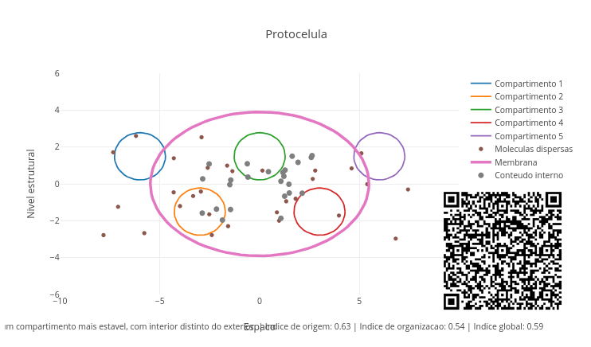
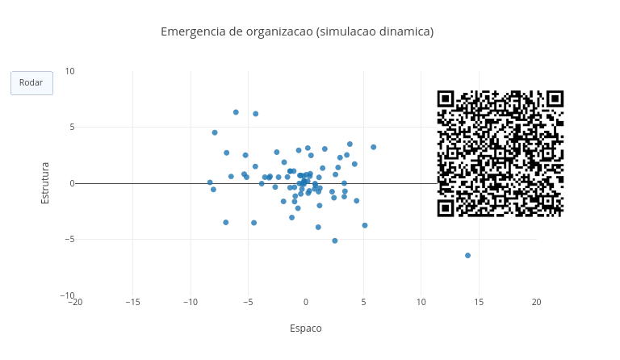
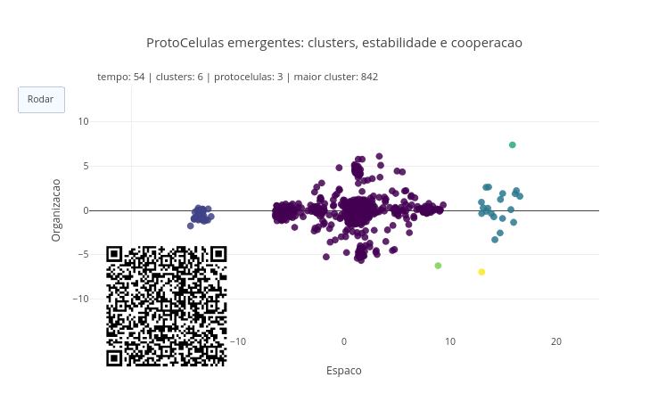
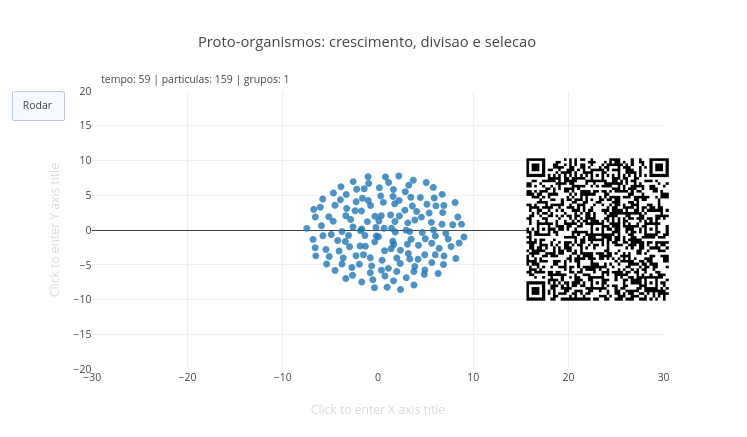
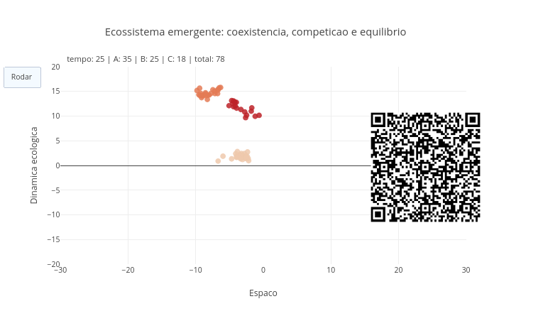
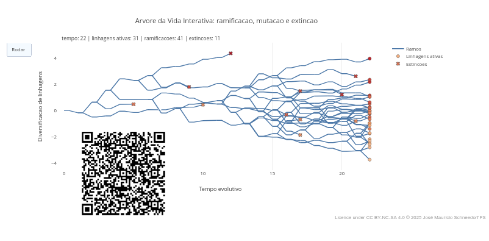
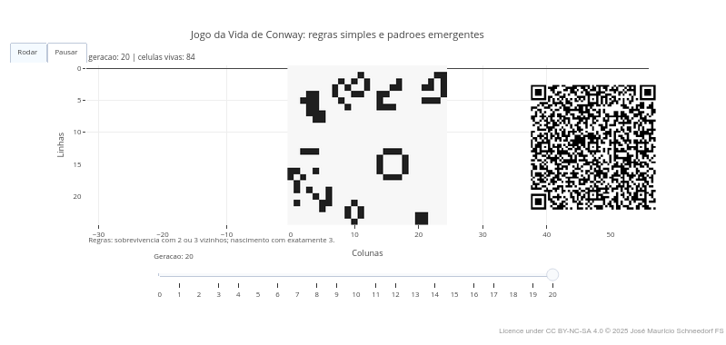

4 Origem, Organização, e Evolução da Vida
Tudo o que existe vivo, de uma bactéria a uma floresta inteira, parece seguir algum tipo de organização. De fato, a vida se organiza em células, tecidos, órgãos e sistemas. No ser humano, por exemplo, os sistemas, tais como o circulatório e o respiratório, são formados por órgãos com funções específicas. Essas funções são desempenhadas por tecidos peculiares. Os tecidos possuem células vivas, e essas, organelas que desempenham papeis bastante específicos. As organelas, por sua vez, são formadas de moléculas, tais como proteínas, DNA, lipídios e carboidratos.
Assim, pode-se dizer a vida é um problema de organização da matéria. Pode ter surgido a partir da matéria não viva, e passou a se organizar em compartimentos, células, tecidos e órgãos. Neste capítulo você terá uma panorâmica de como a vida pode ter surgido e por que ela se organiza em níveis cada vez mais complexos. E apenas pra colocar-lhe uma “pulga atrás da orelha”, reflita se ecossistemas também não formariam um nível de organização acima do indivíduo !
Depois de explorar, você consegue:
- compreender hipóteses gerais sobre a origem da vida;
- reconhecer a importância da compartimentalização nos sistemas vivos;
- identificar níveis de organização biológica, das moléculas aos sistemas;
- relacionar estrutura, função e cooperação entre unidades vivas;
- interpretar propriedades emergentes na passagem entre níveis biológicos;
- explorar modelos computacionais simples para representar organização da vida.
Antes de qualquer definição formal, experimente o JSPlotly abaixo. Interaja com o modelo e observe como estruturas simples podem dar origem a níveis mais complexos de organização.

Nesse primeiro JSPlotly, a proposta não é “provar” como a vida surgiu, mas perceber que a organização biológica pode ser pensada em níveis. Ao variar o nível observado, a quantidade de unidades e sua dispersão, você compara desde arranjos mais simples até estruturas mais integradas, discutindo quando a simples presença de matéria passa a sugerir organização.
Agite antes de usar
No script você altera o nível de organização observado, a quantidade de unidades e a dispersao. A ideia é que a vida não é só matéria, mas matéria organizada em níveis.
- Nível de organização. Você pode escolher o nível molecular, organelar, celular, tecidual, órgão, ou sistema. Numericamente, ok ? Ou seja:
0, 1, 2, 3, 4, ou 5, respectivamente. Clique no botãoadde veja a diferença nos níveis de organização biológica. - Quantidade de unidades. Varie o quanto quiser aqui.
- Dispersão. Esse campo do código mostra quão espalhadas ou concentradas aparecem as estruturas.
Então, você pode experimentar:
const nivel = 0;
const quantidade = 20;
const dispersao = 1.2;Rode e observe. Depois mude para:
const nivel = 3;
const quantidade = 40;
const dispersao = 0.4;E compare com o anterior.
Outro contexto interessante é comparar o grau de dispersão dos elementos. Para isso, faça:
const nivel = 1;
const quantidade = 400;
const dispersao = 0.4;Depois mude a dispersão para 0.9.
Aqui vale uma consideração importante, sobre como interpretar a dispersão. A dispersão não significa diretamente “vida” ou “não vida”. Ela serve apenas como um recurso visual para o conceito de organização. Assim, uma dispersão alta indica elementos mais espalhados e menos concentrados, enquanto que uma dispersão baixa indica elementos mais agrupados, sugerindo maior proximidade e integração. Traduzindo para o conceito de vida, é como se em algum ponto intermediário houvesse um conjunto de partes que começa a se parecer com uma organização, e não apenas um amontoado de elementos.
Seguem alguns cenários exploráveis para esse script da Figura 4.2.
Comece no nível molecular (0) e suba até sistema (5), discutindo o que aparece de novo em cada etapa.
Aumente a quantidade de elementos. Será que quantidade sozinha gera vida ?
Reduza a dispersão e discuta sobre organização versus amontoamento.
“Brincando” com o app, você será capaz de discutir grandes questões da humanidade sobre o assunto, como o que diferencia matéria viva de não viva, como moléculas podem formar estruturas organizadas, e por que a célula é considerada a unidade básica da vida.
A vida pode ser compreendida como uma escala de organização. Moléculas podem compor compartimentos e esse compartimentos podem integrar as células. Células cooperam em tecidos e esses em órgãos, os quais se articulam em sistemas. Em cada passagem, surgem propriedades novas, que não aparecem do mesmo modo no nível anterior. Essas propriedades emergentes para novas funções e padrões estão na base do conceito de vida, tendo como marco a célula biológica com suas múltiplas compartimentalizações.
Para adentrar um pouco mais nessa ideia de função compartimentalizada, teste o app de JSPlotly que segue. Ele pretende simular, ainda que (“pra lá de”) grosseiramente, um modelo celular com organelas ativáveis, para se observar compartimentalização e função.

Esse script explora uma “célula por dentro”, sua compartimentalização, organelas, e a relação entre estrutura e função advinda dessa organização.
Agite antes de usar
Agora as variáveis são do tipo liga/desliga e tipo de célula (tipoCelula). Quanto à primeira, você pode ativar (1) ou desativar (0) algumas estruturas, como membrana, parede celular, núcleo, mitocôndria, cloroplasto, e vacúolo. Em relação aos tipos celulares, você pode escolher entre "procarionte", "eucarionte animal", ou "eucarionte vegetal".
Assim, você pode editar uma célula eucarionte no código, por exemplo:
const tipoCelula = "eucarionte vegetal";
const temNucleo = 1;
const temMitocondria = 1;
const temCloroplasto = 1;
const temVacuolo = 1;
const temMembrana = 1;
const temParede = 1;E depois, comparar com uma célula procarionte:
const tipoCelula = "procarionte";
const temNucleo = 0;
const temMitocondria = 0;
const temCloroplasto = 0;
const temVacuolo = 0;
const temMembrana = 1;
const temParede = 1;Veja que as condições variam pela escolha do tipo celular e pela ativação ou desativação de estruturas. Em vez de alterar quantidades contínuas, como no script da Figura 4.2, agora você compara configurações biológicas distintas. Por exemplo, uma célula procarionte sem núcleo, uma célula animal com mitocôndrias e membrana, ou uma célula vegetal com parede celular, cloroplastos e vacúolo. Dessa forma, você pode verificar que as partes da célula por si só não acrescentam muita coisa. O “chique” é comprovar o que muda na função quando certas estruturas aparecem ou desaparecem.
E o que muda na função depende também das condições que tornam essa organização possível, como o meio (água), a energia disponível, e a cooperação entre estruturas. Essas condições são simuladas no app de JSPlotly da Figura 4.4 abaixo.

Agite antes de usar
Esse script conecta o ambiente primitivo, a formação de compartimentos, e o surgimento de protocélulas, células, órgãos e tecidos. Tudo controlado por parâmetros que representam condições do sistema. Para utilizá-lo, você controla dois aspectos principais:
- Etapa da organização. Varia numericamente entre Terra primitiva (0), compartimentos iniciais (1), protocélulas (2), células (3), tecido (4), e órgão (5).
const etapa = 0; // 0 a 5Condições do sistema. Aqui você seleciona valores numéricos para as seguintes situações:
energia: intensidade de transformações;agua: meio para interação e estabilidade;membrana: formação de compartimentos;cooperacao: integração entre unidades;
Exemplificando:
const energia = 8;
const agua = 7;
const membrana = 3;
const cooperacao = 1;Observe que, para algumas condições, nada se organiza, enquanto que para outras surgem compartimentos. Já para níveis mais altos de organização, torna-se essencial a cooperação. Assim, esse modelo mostra que a organização não depende somente de componentes, mas das condições que permitem sua integração.
Que tal explorar alguns cenários ?
- Terra primitiva energética, mas desorganizada.
const etapa = 0;
const energia = 9;
const agua = 6;
const membrana = 1;
const cooperacao = 0;Perceba que nessa situação há muita atividade, mas pouca organização. Ou seja, energia sozinha não gera vida.
- Compartimentalização emergente. Modifique o código como segue, e veja que surgem compartimentos estáveis.
const etapa = 1;
const energia = 7;
const agua = 8;
const membrana = 7;
const cooperacao = 1;Podemos então considerar as membranas como um verdadeiro divisor de águas na evolução da vida.
- Protocélulas viáveis. Edite o código como segue, e veja que unidades mais estáveis aparecem, sugerindo que uma organização começa a persistir.
const etapa = 2;
const energia = 7;
const agua = 8;
const membrana = 8;
const cooperacao = 3;- Células funcionais. Pelos valores que seguem, pode-se observar que funções começam a se integrar.
const etapa = 3;
const energia = 7;
const agua = 8;
const membrana = 8;
const cooperacao = 6;Essas funções são consequência natural da compartimentalização e da cooperação.
- Tecidos e órgãos. Agora você tem uma integração entre unidades, revelando que a complexidade depende de cooperação.
const etapa = 4;
const energia = 7;
const agua = 8;
const membrana = 8;
const cooperacao = 9;- Ambiente limitante. Quando as condições ambientais limitam a organização, há chances de surgirem estruturas frágeis.
const etapa = 2;
const energia = 2;
const agua = 3;
const membrana = 6;
const cooperacao = 2;Experimente também as situações-limite abaixo:
- Energia alta, sem compartimento. Observe que agora há muita reação, mas nenhuma estabilidade, inibindo o surgimento da vida.
const energia = 9;
const membrana = 0;- Compartimento sem função. Agora a estrutura não apresenta uma dinâmica clara. Então não dá pra saber se estamos diante de uma célula ou de uma “bolha” !
const membrana = 9;
const energia = 2;- Cooperação zero. Nessa situação as unidades não se integram. Existe organismo sem cooperação ?
const cooperacao = 0;
const etapa = 4;- Pouca água. Cenário com baixa interação, em função do papel central da água na formação da vida.
const agua = 1;Em síntese, perceba que, ao variar energia, água, membrana e cooperação, nem toda combinação gera organização, nem toda organização é estável e nem toda estabilidade gera complexidade. Por isso, a vida pode ser entendida como um processo que depende de um equilíbrio entre condições físicas, organização estrutural e integração funcional.
Quando você observa um músculo contraindo, um neurônio transmitindo sinais, ou uma planta crescendo, você está vendo o resultado de múltiplos níveis de organização funcionando juntos. Podemos imaginar que essa organização é o que leva a algumas propriedades emergentes que definem o surgimento e a evolução da vida, mais do que somente uma organização em níveis e compartimentalização funcional. Nesse sentido, a vida começa a aparecer quando certas propriedades emergem da organização de estruturas.
Para explorar essa ideia, um JSPlotly literalmente “mais animado” !

Agite antes de usar
Nesse novo modelo, o sistema evolui ao longo do tempo a partir de algumas regras definidas por você. A grande diferença em relação aos anteriores é que aqui você não define a forma final. Seguem os parâmetros iniciais do código:
N: número de partículas;atracao: tendência de agregação;repulsao: evita colapso total;ruido: nível de agitação (pense numa analogia com temperatura);tempoTotal: duração da simulação.
Após ajustar algum parâmetro, clique em add e observe a dinâmica. O sistema pode apresentar comportamentos muito distintos, tais como dispersão completa, colapso em um único ponto, ou formação de agrupamentos estáveis. O mais interessante ocorre quando surgem estruturas intermediárias, nem totalmente caóticas nem totalmente rígidas. Para verificar isso, explore alguns cenários.
- Caos total. As partículas não se organizam.
const atracao = 0.01;
const repulsao = 0.01;
const ruido = 1.0;Então, o que garante a organização não é somente a matéria.
- Colapso total. Tudo converge para um único ponto.
const atracao = 0.2;
const repulsao = 0;
const ruido = 0.2;Então, a organização não é simplesmente “grudar o que aparece”.
- Zona de emergência. Aqui surgem agrupamentos estáveis.
const atracao = 0.05;
const repulsao = 0.02;
const ruido = 0.3;Então, a organização aparece em uma faixa intermediária de condições.
Agora, o que pode acontecer quando agrupamentos viram unidades autossuficientes, como protocélulas ?
Adivinha !!! Surge mais um JSPlotly !

Agite antes de usar
Agora, o sistema identifica agrupamentos (clusters) e os destaca visualmente. Os parâmetros importantes dessa nova simulação são:
raioLigacao: define proximidade entre partículas;tamanhoProto: tamanho mínimo para considerar um agrupamento;atracao,repulsao,ruido: mesmo significado do script da Figura 4.5;
Nesse novo script, você poderá observar como pequenos encontros geram unidades estáveis. Também conseguirá ver que agrupamentos maiores tendem a persisir, até que alguns passem a se comportar como unidades. Cenários ? É pra já !!
- Zona fértil. Aparecem múltiplas protocélulas.
const atracao = 0.045;
const repulsao = 0.018;
const ruido = 0.35;
const tamanhoProto = 6;- Sistema instável. Agrupamentos não se mantêm.
const ruido = 1.2;E o que ocorre quando proto-organismos evoluem para crescimento e seleção natural ? Bom, acho que você já adivinhou !

Agite antes de usar
Nesse modelo, os agrupamentos crescem, se dividem, e variam. Os parâmetros agora são mutacao, ruido, atracao, e repulsao.
Observe que alguns grupos crescem mais enquanto outros desaparecem. Observe também que surgem padrões de persistência nos agrupamentos. Cenários ?
- Zona fértil. Crescimento e divisão.
const atracao = 0.05;
const repulsao = 0.02;
const ruido = 0.3;
const mutacao = 0.4;- Alta mutação. Sistema instável e diverso.
const mutacao = 0.8;E o que pode ocorrer quando agrupamentos persistentes passam a interagir num novo nível de organização ? Aí podem emergir verdadeiros ecossistemas. Bom…

Agite antes de usar
Nesse novo app há três tipos de entidades que interagem: A (mais estáveis), B (intermediárias) e C (competitivas). Os parâmetros para você editar no código são:
nA,nB,nC;predacao;cooperacaoA;ruido;
Agora você poderá observar alguns fenômenos entre grupos, como coexistência ou colapso, dominância de grupos, ou equilíbrio dinâmico. Seguem cenários.
- Equilíbrio.
const nA = 35;
const nB = 25;
const nC = 18;
const predacao = 0.05;
const cooperacaoA = 0.04;- Colapso competitivo. Aqui a diversidade reduz.
const predacao = 0.12;"Se você chegou até aqui é porque....". Bom, essa frase é clássica nos dias de hoje. Mas tenha certeza que terá valido a pena sua resiliência inconteste em meio a tantos scripts ! Além de todo o conhecimento sobre o surgimento e evolução da vida auferido durante toda essa sua saga pessoal, o final do arco-íris te aguarda com um pote de ouro !! Bem…quase isso !

Agite antes de usar
Nesse outro modelo, a história da vida é representada como uma árvore dinâmica de linhagens. Cada ramo pode persistir, se dividir em novos ramos, mudar ligeiramente de característica ou desaparecer. Dessa forma, a árvore aparece como resultado de processos simultâneos de continuidade, inovação e perda. O script favorece a compreensão de que a evolução não é uma escada linear, mas uma história ramificada, contingente e marcada tanto por diversificação quanto por extinção.
Você pode construir uma verdadeira “árvore da vida” com o script, e decidir como determinados organismos evoluem para ramificar em novos grupos (chanceRamificacao), derivados ou não de episódios de mutação em seu DNA (intensidadeMutacao). E também pode aprender como alguns organismos regridem à completa extinção (chanceExtincao). Tudo na mais santa paz, é claro !
Seguem dois cenários para você para explorar o aplicativo.
- Árvore da vida exuberante.
const chanceRamificacao = 0.22;
const chanceExtincao = 0.08;- Mundo hostil.
const chanceExtincao = 0.18;Observe que linhagens podem surgir ou desaparecer. Veja também que a diversidade varia ao longo do tempo, por vezes seguindo algum padrão. E que padrões não são lineares na evolução ! Eles trazem consigo uma história. Podem surgir a partir de sistemas físico-químicos, passando por organização em níveis estruturais, compartimentalização e funcionalidade, interação entre unidades e transformação ao longo do tempo. Enfim, a vida está muito além de matéria energia. Ela depende de organização, interação, persistência, e transformação.
Que tal agora integrar os apps todos nessa seção de sublime abstração mental e perfusão oxigenada ?
- E se não houvesse membranas capazes de separar interior e exterior ?
- E se existissem moléculas complexas, mas sem compartimentalização ?
- E se as primeiras células não cooperassem entre si ?
- E se a vida tivesse surgido em ambientes muito diferentes dos oceanos primitivos ?
- E se os organismos permanecessem sempre unicelulares ?
- E se tecidos não gerassem propriedades novas em relação às células isoladas ?
- E se houver energia, mas nenhuma compartimentalização ?
- E se houver organização, mas nenhuma cooperação ?
- E se houver crescimento, mas nenhuma variação ?
- E se houver competição extrema ?
- E se não houver extinção ?
A vida pode ser compreendida não apenas como matéria, mas como matéria organizada, delimitada, funcional e capaz de cooperar em múltiplos níveis. Das hipóteses sobre a Terra primitiva até a formação de tecidos e órgãos, o que se observa é uma história de compartimentalização, integração e emergência. Compreender a organização dos seres vivos nos ajuda a entender também como novas propriedades surgem quando unidades menores passam a atuar em conjunto.
E essas mesmas regras são vistas também na biologia de sistemas, na teoria da complexidade, na modelagem computacional, em redes neurais, na computação quântica, e na comunicação, entre várias outras situações. Em relação a esse “outro mundo”, também os Grandes Modelos de Linguagem dos assistentes de Inteligência Artificial - LLMs ("Large Language Models"). Essas estruturas algoritmicas são treinadas em volumes massivos de dados para compilação estatística, compreensão e geração de texto humanizado, podendo traduzir idiomas, criar objetos multimidiáticos, e realizar tarefas de processamento de linguagem natural.
No capítulo foram abordados diversos temas e apps de JSPlotly correlatos para uma “mão na massa” sobre os conceitos que definem a vida e sua evolução no planeta. Fugindo da praxis dessa seção, a de apresentar a lógica de programação de um determinado script, preferiu-se resumir “evolutivamente” todos os códigos apresentados, esboçando mesmo como a vida se manifesta em níveis crescentes de complexidade.
Script 1: níveis de organização da matéria viva; Script 2: célula como sistema compartimentalizado;
Script 3: condições que tornam a vida possível; Script 4: organização emergente a partir de interações; Script 5: surgimento de unidades (protocélulas);
Script 6: persistência, variação e seleção (pré-evolução);
Script 7: interações entre formas de vida (ecossistema);
Script 8: diversificação e história das linhagens (árvore da vida).
Perceba que essa sequência também apresenta, ainda que timidamente, um fluxo evolutivo para a vida. Mas, pra não ficarmos apenas no blá-blá-blá, um último script de JSPlotly, esse uma releitura de um aplicativo muito famoso nos anos 1970 !
Jogo da Vida de Conway
O Jogo da Vida é um autômato celular criado pelo matemático britânico John Horton Conway em 1970. Baseia-se na construção de máquinas autorreprodutivas, tendo sido popularizado pela revista Scientific American. Trata-se de um "jogo sem jogadores" que ocorre em um tabuleiro quadriculado infinito, e onde a evolução de cada célula é determinada inteiramente por seu estado inicial (viva ou morta) e por quatro regras simples de vizinhança. Essas regras simulam processos de nascimento, sobrevivência e morte por isolamento ou superpopulação. Apesar da simplicidade das regras, o sistema é capaz de gerar padrões complexos e imprevisíveis, funcionando como um modelo matemático para estudar sistemas dinâmicos e emergência na computação.
E…é claro…também passível de ser apresentado em códigos pelo JSPlotly !

O Jogo da Vida de Conway não é um modelo histórico da origem da vida, mas uma metáfora computacional extremamente útil. A partir de regras locais muito simples, surgem padrões estáveis, oscilatórios ou móveis. Isso ajuda a introduzir a ideia de emergência: formas complexas podem emergir de regras muito simples, e sem que tenham sido desenhadas diretamente desde o início.
No Jogo da Vida da Figura 4.10 você altera apenas um bloco:
const linhas = 25;
const colunas = 25;
const geracoes = 20;
const densidadeInicial = 0.28;
const padrao = "aleatorio";
Padrões sugeridos
const padrao = "aleatorio";Cada posição da grade pode assumir dois estados: 0 (célula morta), ou 1 (célula viva). A dinâmica do sistema não depende de um “controle central”, mas apenas de regras locais aplicadas a cada célula.
As regras do sistema
A cada geração, o estado de cada célula depende apenas do número de vizinhos vivos ao seu redor. Uma célula viva sobrevive se tiver 2 ou 3 vizinhos vivos, e uma célula morta passa a viver se tiver exatamente 3 vizinhos vivos. Essas regras estão implementadas na função:
function proximaGeracao(g) {
const nova = criarGradeVazia(g.length, g[0].length);
for (let i = 0; i < g.length; i++) {
for (let j = 0; j < g[0].length; j++) {
const vivos = contarVizinhos(g, i, j);
if (g[i][j] === 1) {
nova[i][j] = (vivos === 2 || vivos === 3) ? 1 : 0;
} else {
nova[i][j] = (vivos === 3) ? 1 : 0;
}
}
}
return nova;
}Observe que, diferentemente dos scripts anteriores, não há nenhuma instrução dizendo “forme estruturas” ou “crie padrões”. Os padrões surgem naturalmente. O sistema começa com uma grade inicial, e que pode ser aleatorio ou um padrão específico (glider- movível, blinker- oscilatório, block- estável).
const padrao = "aleatorio";A cada passo conta-se o número de vizinhos vivos, aplica-se a regra local, e gera-se uma nova grade. Esse processo é repetido ao longo do tempo, formando uma sequência de gerações.
Como a animação é construída
Cada estado da grade é armazenado como um frame (quadro):
frames.push({
name: "g" + t,
data: [{ z: gradeParaHeatmap(grade), type: "heatmap" }]
});Esses frames são exibidos com um botão Rodar/Pausar e um slider temporal, possibilitando uma exploração do modelo.
Mesmo sem representar moléculas, células ou organismos reais, o modelo é capaz de mostrar que estruturas podem surgir sem serem programadas diretamente. Além disso, também permite observar que padrões podem persistir, oscilar ou se deslocar, e que pequenas regras locais geram comportamentos globais complexos.
Em suma, o modelo do Jogo da Vida de Conway é um exemplo clássico de como regras extremamente simples podem gerar comportamentos complexos.